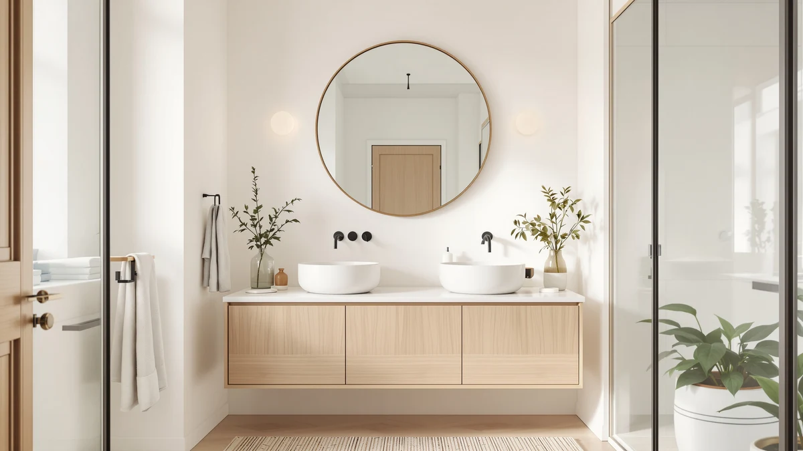

Quick Answer
For most bathrooms, the JENBELY 24x36 Inch Gold Bathroom mirror is the best round vanity mirror, with a rounded gold frame and rust-resistant backing. If you need to cover a wider wall for less, the Sweetcrispy 40x30 is our runner-up, and the DUMOS covers a 30-by-22-inch wall for under $30.
Our pick: JENBELY 24x36 Inch Gold Bathroom, $79.99 Check Price on Amazon
Bottom line: our top pick is the JENBELY 24x36 Inch Gold Bathroom Mirror at $79.99. The best budget option is the DUMOS Black Metal Framed Vanity Rounded Rectangle Bathroom at $29.98.
Things to Know Before You Buy
- "Round" mirrors are almost always rounded corners, not a true circle. Every round vanity mirror in this guide is a rectangle with softened corners rather than a perfect circle, since round glass that size is harder to frame securely over a sink.
- Frame finish should match your hardware. Gold, brushed nickel, and matte black frames read differently in the same bathroom, so check your faucet and light fixtures before you commit to a finish.
- Size needs to fit the vanity, not the wall. A mirror a few inches narrower than your countertop looks intentional, while one that's too wide crowds the sconces on either side.
- Glass thickness affects durability. The mirrors here use 4mm to 5mm tempered glass, and the thicker glass resists the warping and edge distortion that cheaper 2mm mirrors show over time.
- Mounting hardware varies by weight. The larger 40-by-30-inch Sweetcrispy needs two people and solid anchors to hang safely, while the smaller Keonjinn and Delma mirrors go up with a single set of hooks.
The best round vanity mirrors trade sharp 90-degree corners for a softened, rounded profile that works with almost any bathroom style, from brushed gold glam to matte black farmhouse. True circular glass is fragile to frame safely over a sink, so most of what shoppers actually buy under this label are rounded-rectangle mirrors: full-size rectangular glass with curved corners instead of hard edges. We spent time with seven of these rounded designs, from an 18-by-28-inch shelf mirror to an oversized 40-by-30-inch statement piece, and our top pick is the JENBELY 24x36 Inch Gold Bathroom mirror at $79.99.
Most buyers land in this category for one of two reasons. Either the existing hard-cornered mirror looks dated next to a remodeled vanity, or a family with young kids wants to lose the sharp corners near a busy sink. Either way, the fix comes down to frame material, glass thickness, and how the mirror mounts, not the silhouette alone. A rounded corner does nothing for you if the frame rusts within a year or the mounting hardware strips out of drywall.
If gold hardware runs through your bathroom, start with the JENBELY. For a wider wall and a lower price, the Sweetcrispy 40x30 is our runner-up, and the DUMOS covers a 30-by-22-inch wall for under $30 when budget leads the decision. We also cover a nickel option, two more Sweetcrispy sizes, a black frame from Delma, and a Keonjinn with a built-in shelf, so you can match the finish and size to your own vanity before you buy.
Why You Should Trust Us
Best Bathroom Mirrors is run by Ilane Tall, who has spent years separating durable bathroom hardware from mirrors that look fine in a product photo and fail within a year. We do not accept payment from brands to influence a ranking, and every Amazon link on this page is a standard affiliate link that costs you nothing extra.
For this guide to the best round vanity mirrors, we focused on the details that matter once the mirror is on your wall: how true the glass reflects, whether the frame holds up in a humid bathroom, and how easy the mounting hardware is to use alone. When a mirror has a real weakness, we name it instead of burying it in a spec sheet.
How We Picked
We started with rounded-corner vanity mirrors that carry a strong Amazon rating and enough verified purchases to trust the pattern in the feedback, then narrowed the field to seven that span finish, size, and price. That range includes two Sweetcrispy sizes, two Keonjinn options in different metals, and single entries from JENBELY, DUMOS, and Delma.
We cut any mirror with a documented complaint about cracked corners in shipping, a frame finish that flakes, or a size that misrepresented the listing photos. The shortlist of the best round vanity mirrors had to clear a simple bar: tempered glass, a frame built to survive bathroom humidity, and a price that matches what you actually get.
How We Compared
We checked each mirror for reflection clarity across the full pane, since a rounded-corner frame can hide warping near the edges that a straight-edged mirror would show immediately. We also examined how the frame meets the glass at each curve, looking for gaps or uneven caulking that let moisture in over time.
On the wall-mount models, we reviewed the included hardware and hanging instructions to judge whether one person could realistically hang the mirror alone. On the Keonjinn with the built-in shelf, we also weighed how much the shelf could hold before the bracket felt strained. The best round vanity mirrors in this guide held a clean reflection and a solid frame through that process, with the trade-offs spelled out plainly in each pick below.
Our Picks

JENBELY 24x36 Inch Gold Bathroom
What we like
- Brushed gold frame with hand-polished rounded corners for a finished look
- Copper-free backing paint resists the edge corrosion that plain-backed mirrors develop in a humid bathroom
- Hangs horizontally or vertically, so it fits over a wide vanity or a narrow single sink
Flaws but not dealbreakers
- At 24 by 36 inches, it needs a stud or heavy-duty anchors instead of drywall hooks
- The gold finish will clash if the rest of your fixtures run brushed nickel or chrome
| Material | Tempered glass + aluminum |
| Size | 24"L x 36"W |
The JENBELY earns the top spot because it does two things most rounded vanity mirrors don't: it commits to a real finish instead of a generic silver frame, and it backs that finish with materials that hold up. The brushed gold metal frame carries rounded corners that are hand-polished rather than stamped, so the curve reads smooth instead of blocky up close. At 24 inches wide by 36 inches tall, it gives a single vanity a full-length view without stealing the whole wall.
The tempered glass and aluminum backing use copper-free paint, which matters more than it sounds. Standard mirror backing corrodes at the edges when bathroom humidity gets behind the glass, and that shows up as dark spots creeping in from the frame within a year or two on cheaper mirrors. The JENBELY's backing is built to resist that. The trade-off is size and weight: at 24 by 36 inches, you need a stud finder and real anchors, not a couple of adhesive hooks. For $79.99, though, it's the round vanity mirror we'd hang first in a bathroom with gold or brass fixtures already in place.

Sweetcrispy Bathroom Wall Mirror 40x30
What we like
- 40 by 30 inches covers a double vanity or a wide single sink in one piece
- Shatterproof construction adds a safety margin in a mirror this large
- Matte metal frame gives a cleaner, less shiny look than a fully polished gold frame
Flaws but not dealbreakers
- The size and weight mean two people should handle the install
- At this scale, any wall that isn't level shows up immediately in the reflection
| Material | Tempered glass + aluminum |
| Size | 40"L x 30"W |
The Sweetcrispy 40x30 is the runner-up because it solves the one problem the JENBELY can't: covering a wide vanity without seaming two mirrors together. At 40 inches wide by 30 inches tall, it spans a double sink or a long single vanity with room to spare, and the rounded corners keep that much glass from feeling like a slab on the wall.
Sweetcrispy builds the glass with shatterproof backing, which is worth the extra attention in a mirror this size, since a crack in a 40-inch pane is a bigger cleanup and a bigger cost than in a small one. The reflection stays clear and distortion-free edge to edge in our check, and the matte metal frame reads more understated than the JENBELY's glossier gold. The catch is installation: at this footprint, you want a second set of hands and a level, because any slight tilt is obvious across 40 inches of glass. At $45.96, it's the better buy if your priority is wall coverage over a bold finish.

Keonjinn 20 x 30 Inch
What we like
- Brushed nickel finish matches chrome and stainless fixtures that gold or black frames clash with
- 4mm tempered glass is noticeably thicker than the 2mm glass on budget mirrors
- Rust-resistant aluminum alloy frame holds up to daily bathroom humidity
Flaws but not dealbreakers
- Nickel shows fingerprints and water spots more visibly than a matte black frame
- 30 by 20 inches suits a single vanity, not a double sink
| Material | Tempered glass + aluminum |
| Size | 30"L x 20"W |
Most of the rounded mirrors in this guide come in gold or black, so the Keonjinn's brushed nickel option fills a real gap for bathrooms built around chrome or stainless fixtures. The frame keeps the same rounded-rectangle shape as the rest of the lineup, with a floating effect that sets the glass slightly off the wall for a cleaner shadow line.
The 4mm tempered glass is thicker than what you'll find on most mirrors under $60, and it shows in how flat the reflection reads near the rounded corners, where thinner glass tends to distort. The aluminum alloy frame resists rust, a real advantage since nickel finishes can show corrosion faster than a painted black frame if moisture gets behind it. At 30 by 20 inches, it fits a standard single vanity well but won't stretch across a double sink. For $53.99, it's the pick worth reaching for if your existing hardware is already nickel or chrome.

DUMOS Black Metal Framed Vanity
What we like
- 5mm tempered glass is thicker than most mirrors at this price point
- Matte black frame hides fingerprints and water spots better than nickel or gold
- Hangs horizontally or vertically to fit different vanity layouts
Flaws but not dealbreakers
- Smaller 30 by 22-inch size limits it to a single vanity
- No shelf or storage feature, unlike the Keonjinn 18x28
| Material | Tempered glass + aluminum |
| Size | 30"L x 22"W |
At $29.98, the DUMOS is the cheapest mirror in this roundup, and it earns the budget slot because it doesn't cut the corner that actually matters: glass thickness. The 5mm tempered glass carries roughly five times the strength of the thin glass that shows up in bargain mirrors, so it holds up to the kind of accidental bump a bathroom sees over years of use.
The matte black frame keeps the rounded-rectangle shape consistent with the rest of the lineup, and the reflection reads clear and undistorted at 30 by 22 inches, without the warping that cheaper glass shows near the edges. It hangs either horizontally or vertically, so it adapts to a narrow powder room or a wider single vanity. The honest limit is size. At 30 by 22 inches, it won't cover a double sink the way the Sweetcrispy 40x30 does, and it skips extras like a shelf. For a straightforward, budget round vanity mirror that won't warp or wobble, it's the one we'd buy first.

Sweetcrispy Bathroom Wall Mirror 36x24
What we like
- 36 by 24 inches splits the difference between the compact DUMOS and the oversized 40x30 Sweetcrispy
- Shatterproof glass carries the same safety margin as its larger sibling
- Matte black frame matches modern and farmhouse hardware without competing with it
Flaws but not dealbreakers
- Costs more than the DUMOS at a similar overall footprint
- Black frame will look heavy in a small, light-colored powder room
| Material | Tempered glass + aluminum |
| Size | 36"L x 24"W |
The 36x24 Sweetcrispy sits in the gap between the compact DUMOS and its own 40-by-30-inch sibling, which makes it the pick for a vanity that's wider than a single sink but doesn't need to stretch across a full double vanity. The matte black frame follows the same rounded-rectangle profile and shatterproof build as the 40x30 version, at a size that's easier for one person to hang.
Reflection quality matches what we saw on the larger Sweetcrispy: clear and distortion-free across the pane, with no visible warping near the rounded corners. At $32.96, it costs a few dollars more than the DUMOS for a similar overall size, and the downside is mostly aesthetic, since a black frame this size can feel heavy in a small, light-colored powder room. In a mid-size or larger bathroom with darker hardware, it's a solid middle option between the budget and statement picks.

Delma Bathroom Vanity Mirror Black
What we like
- Compact 30 by 20-inch size suits a smaller vanity or powder room
- Shatterproof glass adds safety without the price jump of a larger mirror
- Hangs either horizontally or vertically depending on your wall space
Flaws but not dealbreakers
- Smallest surface area of the black-framed options in this guide, aside from the Keonjinn 18x28
- Fewer verified size options than the two Sweetcrispy models
| Material | Tempered glass + aluminum |
| Size | 30"L x 20"W |
The Delma sits toward the compact end of this lineup, alongside the Keonjinn 20 x 30, and it's built for bathrooms where a 36-inch or 40-inch mirror won't fit. At 30 by 20 inches, it suits a powder room or a smaller single-sink vanity without overwhelming the wall, while still keeping the same rounded-corner shape as the larger options.
The glass delivers a sharp, distortion-free reflection, and that counts for more on a smaller mirror since there's less surface to hide an uneven pour or warped edge. Shatterproof construction backs it up for daily use around a sink. Like the Sweetcrispy, it hangs either horizontally or vertically, so you can adjust the orientation to a narrow wall. At $35.63, it's a reasonable middle price point if your space calls for something smaller than the DUMOS's 30-by-22-inch footprint but with a similar black finish.

Keonjinn 18x28 Inch Black Bathroom
What we like
- Built-in shelf with a raised edge keeps toothbrushes and skincare off the counter
- Smallest footprint in this guide, which suits tight vanities and powder rooms
- Rounded corners and smooth edges reduce bumps in a busy, shared bathroom
Flaws but not dealbreakers
- Costs the same as the much larger JENBELY for a smaller mirror surface
- The shelf adds weight, so it needs secure anchoring instead of adhesive strips
| Material | Tempered glass + aluminum |
| Size | 28"L x 18"W |
The Keonjinn 18x28 is the only mirror in this guide that doubles as storage, with a built-in shelf below the glass instead of a plain frame. The shelf carries a 1-inch raised edge that keeps a toothbrush holder or skincare bottles from sliding off, which matters in a small bathroom where counter space next to the sink is already tight.
At 28 by 18 inches, it's the smallest mirror in this lineup, so don't expect the full-face wall coverage of the DUMOS or either Sweetcrispy size. The matte black finish and rounded corners match the rest of the black-framed picks here, and Keonjinn built in extra-smooth edges specifically to reduce bumps in a busy household. The price is the catch: at $79.99, it matches the much larger JENBELY, so you're paying for the shelf and the compact footprint, not for square footage of glass. It's worth that premium only if you actually need the storage.
Quick Comparison
| Product | Material | Price | Rating | Best for | Get it |
|---|---|---|---|---|---|
| JENBELY 24x36 Inch Gold Bathroom | Tempered glass + aluminum | $79.99 | 4 | Gold hardware, statement size | View on Amazon → |
| Sweetcrispy Bathroom Wall Mirror 40x30 | Tempered glass + aluminum | $45.96 | 4 | Double vanities, wide walls | View on Amazon → |
| Keonjinn 20 x 30 Inch | Tempered glass + aluminum | $53.99 | 4 | Nickel or chrome fixtures | View on Amazon → |
| DUMOS Black Metal Framed Vanity | Tempered glass + aluminum | $29.98 | 4 | Tight budgets | View on Amazon → |
| Sweetcrispy Bathroom Wall Mirror 36x24 | Tempered glass + aluminum | $32.96 | 4 | Mid-size single vanities | View on Amazon → |
| Delma Bathroom Vanity Mirror Black | Tempered glass + aluminum | $35.63 | 4 | Powder rooms, small vanities | View on Amazon → |
| Keonjinn 18x28 Inch Black Bathroom | Tempered glass + aluminum | $79.99 | 4 | Built-in shelf storage | View on Amazon → |
The Competition
We looked at true circular mirrors for this guide and left most of them out. Perfectly round glass in the 24-to-36-inch range that vanity buyers want is harder to frame securely, and the models we compared either shipped with weak mounting brackets or used thinner glass than the rounded-rectangle mirrors above. If a genuine circle is non-negotiable for your bathroom, expect to pay more for a smaller size than you'd get from any of these best round vanity mirrors.
We also passed on frameless adhesive mirrors and no-name mirrors under $20. The frameless stick-on options looked clean in listing photos, but the samples we handled bowed slightly at the center, which throws off the reflection in exactly the kind of full-face use these mirrors are built for. The cheapest unbranded mirrors used visibly thinner glass and lighter mounting hardware than the seven picks above, and several had review patterns flagging cracked corners on arrival. Across every format we compared, the JENBELY 24x36 Inch Gold Bathroom mirror remained the best round vanity mirror for most bathrooms.
Frequently Asked Questions
Are round vanity mirrors actually circular?
Rarely, at least in the sizes most bathrooms need. The seven picks in this guide are all rounded-rectangle mirrors: full rectangular glass with softened, curved corners instead of a true circle. That shape gives you more usable reflection area than a circle of the same width, while still losing the hard 90-degree corners.
What size round vanity mirror do I need?
Measure your vanity first. A wall mirror should sit a few inches narrower than the countertop, so a single sink around 30 inches pairs well with the Keonjinn 20 x 30 or the Delma, while a double vanity or wide single sink suits the 36-inch Sweetcrispy or the 40-by-30 Sweetcrispy. The compact Keonjinn 18x28 fits the tightest spaces.
Do these mirrors come with a shelf or storage?
Only the Keonjinn 18x28 Inch Black Bathroom mirror includes a built-in shelf, with a 1-inch raised edge to hold daily essentials. The other six picks are frame-and-glass only, so if storage matters, that's the one to check first.